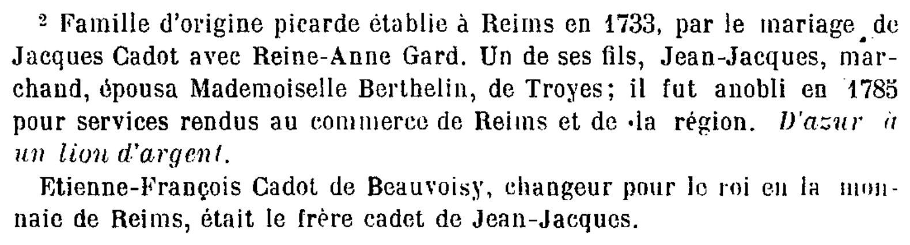
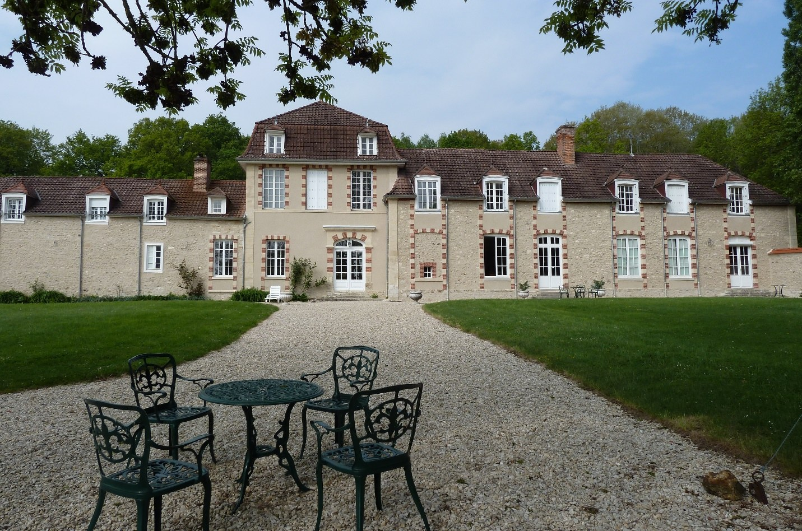
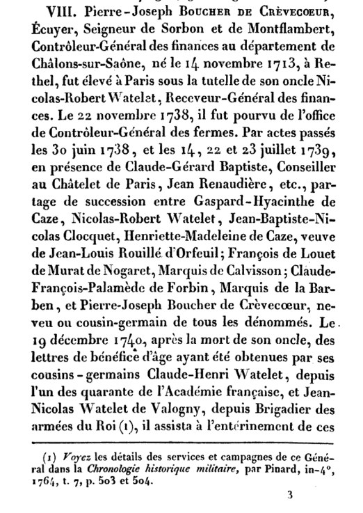
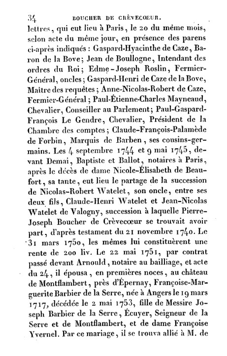
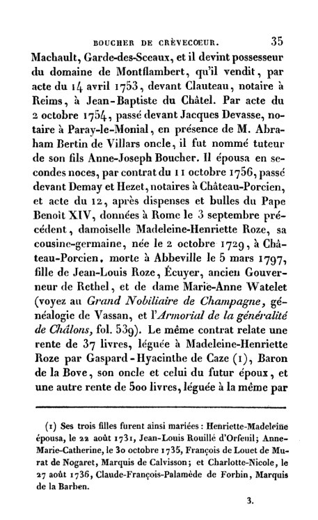
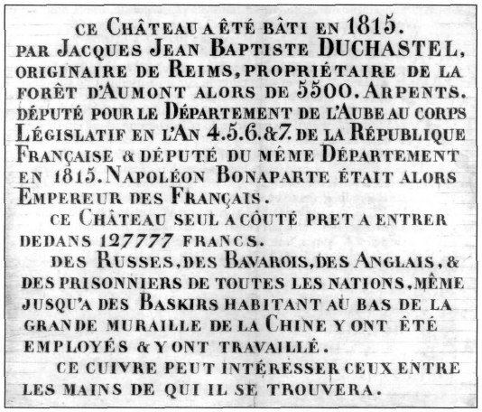
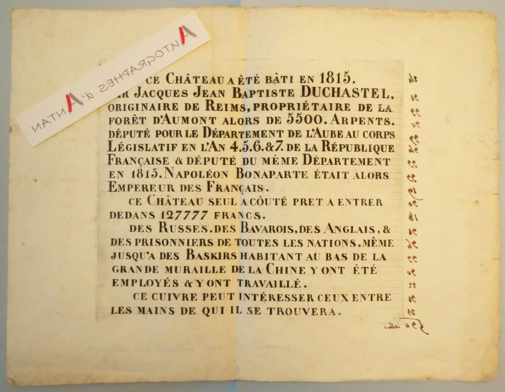

1Fiche d’identité
Jean-Baptiste Duchastel naît à Reims le 18 mars 1723, fils de Jacques Duchastel et de Marie-Jeanne Miteau. Par l’achat de charges royales, puis des lettres patentes obtenues en 1775 au moment du sacre de Louis XVI, il fait entrer sa famille dans la noblesse. Il devient seigneur de Montflambert (domaine acheté en 1753), épouse en 1755 Louise-Nicolle Cadot, d’une famille en vue de Reims, et meurt à Reims le 2 février 1809, à 85 ans, après avoir vécu la fin de l’Ancien Régime, la Révolution et le Premier Empire.
- Naissance
- 18 mars 1723, Reims, paroisse Saint-Étienne (Marne)
- Décès
- 2 février 1809, à 85 ans, Reims (Marne)
- Parents
- Jacques Duchastel (1700-1740)
Marie-Jeanne Miteau (1703-1751) - Charges & titres
- Écuyer, conseiller secrétaire du Roi, maison couronne de France et de ses finances ; seigneur de Montflambert
- Mariage
- 22 avril 1755, Reims, Saint-Étienne, avec Louise-Nicolle Cadot (22 septembre 1736 – 14 juin 1776)
- Résidences & biens
- Rue Saint-Étienne, Reims (aujourd’hui 29, rue de l’Université) ; manoir de Montflambert (Mutigny) ; maison de Cormontreuil
- Enfants
- Trois fils : Jacques-Jean-Baptiste (1756), Jean-Baptiste-Philippe (1757), Jacques-Gabriel (1758)
- Anoblissement
- Lettres patentes de 1775, à l’occasion du sacre de Louis XVI à Reims
2Origines familiales
Jean-Baptiste est le fils de Jacques Duchastel (1700-1740) et de Marie-Jeanne Miteau (1703-1751), mariés à Reims. Il a 17 ans à la mort de son père en 1740. Sa mère, restée veuve, parvient à conserver et à faire prospérer la fortune commerciale de la famille, ce qui permet à Jean-Baptiste d’aborder les années 1750 en position d’acheter des charges.
Par son père, il descend de Jean-Baptiste Duchastel (v. 1669-1702) et de Marguerite Plantin (1674-1754) ; par sa mère, de Jean Miteau (1672-1737) et de Jeanne Huart (v. 1667-1741). Son père est présenté sur la page de Jacques Duchastel (1700-1740).
La notice de travail le dit « fils unique ». Or elle parle plus loin de son « frère Nicolas » : voir « Points à vérifier ».
3Les charges royales et l’anoblissement
Installé à Reims, Jean-Baptiste connaît une ascension sociale importante en achetant des charges auprès de la Couronne :
- écuyer et conseiller du Roi à la Maison de France ;
- secrétaire du Roi, fonction stratégique : conseiller secrétaire du Roi, maison couronne de France et de ses finances.
1775 — lettres patentes du sacre. C’est la charge de secrétaire du Roi qui lui vaut l’anoblissement officiel. Il obtient ses lettres patentes en 1775, octroyées par Louis XVI à l’occasion des fêtes de son sacre à la cathédrale de Reims.
Le titre et la seigneurie de Montflambert
Jean-Baptiste est le premier de sa branche à porter le titre attaché à la seigneurie de Montflambert. Le domaine existe toujours au cœur des vignobles de Champagne : c’est le manoir de Montflambert, à Mutigny, à une vingtaine de kilomètres de Reims, au nord-est d’Épernay. La pierre de fondation de sa maison de Reims (1769) l’appelle déjà « Sgr de Montflambert » (voir section 5).
C’est cet achat de 1753, et non un titre de baron, qui explique le nom « de Montflambert » porté par ses fils. Le nom « de Montrouge » n’apparaît qu’avec le brevet royal de 1788 de son fils Jacques-Gabriel (voir sa page).
Que représente la charge de secrétaire du Roi ?
Les secrétaires du Roi sont des officiers de la chancellerie : ceux de la grande chancellerie de Paris dressent, signent ou rapportent les lettres de grâce, de rémission et d’autres actes des grandes cours. Leur collège, réuni en 1672 (240 secrétaires), est fixé à 300 charges par lettres de 1727. On y entre avec la permission du roi, après une enquête de moralité et sur les revenus du candidat.
Le privilège principal est la noblesse. Depuis des lettres patentes de Charles VIII (1484), elle s’acquiert dès l’entrée en charge et se transmet aux enfants. On la conserve si l’on exerce jusqu’à la mort ou si l’on obtient des lettres de vétérance ; une démission ou une vente avant vingt ans d’exercice la fait perdre. Les nobles de race s’en moquaient : le corps est surnommé « savonnette à vilain », et Saint-Simon y voit « un corps de roturiers richard ».
Jean-Baptiste est déjà qualifié de « conseiller secrétaire du Roi » dans l’acte de baptême de son fils Jacques-Gabriel en 1758, et d’« écuyer secrétaire du Roy » sur la pierre de 1769. Le lien exact entre cette charge et les lettres patentes de 1775 reste à documenter.
La noblesse est abolie le 23 juin 1790, alors que Jean-Baptiste a 67 ans. Les offices de secrétaires du Roi disparaissent peu après, le 7 septembre 1790 ou le 27 avril 1791 selon les sources.
Le sacre de Louis XVI (11 juin 1775)
Louis XVI est sacré à la cathédrale de Reims le dimanche de la Trinité, 11 juin 1775, par l’archevêque de Reims, Charles-Antoine de La Roche-Aymon. C’est le premier sacre depuis celui de Louis XV en 1722 et le dernier de l’Ancien Régime ; Marie-Antoinette n’est pas couronnée. Pour les Rémois, c’est l’événement de la décennie : Jean-Baptiste, qui vit dans la ville, obtient ses lettres patentes à cette occasion.
4Le mariage de 1755 et la famille Cadot
Le 22 avril 1755, à Reims (paroisse Saint-Étienne), Jean-Baptiste, 32 ans, épouse Louise-Nicolle Cadot, 18 ans. Née à Reims, Saint-Étienne, le 22 septembre 1736, elle est la fille de Jacques(-François) Cadot (1708-1766) et de Reine-Anne Gard (1712-1764). Elle meurt à Reims le 14 juin 1776, à 39 ans, et est inhumée le 16 juin, au bout de 21 ans de mariage. Le document ne mentionne aucune seconde union de Jean-Baptiste.
Le contexte de l’alliance
En 1755, le père de Jean-Baptiste est mort depuis quinze ans. Les Cadot, eux, sont bien intégrés à l’administration royale et au commerce rémois : officiers des approvisionnements, notaires royaux, fonctionnaires bourgeois. L’alliance place la branche de Jean-Baptiste dans le cercle de la haute bourgeoisie de robe de Champagne.
Ce que l’on attend d’un tel contrat
Sous l’Ancien Régime, un contrat de mariage dans la haute bourgeoisie sert à consolider richesse, terres et prestige. Pour le contrat de 1755, la notice indique :
- La dot : argent liquide, rentes de grande qualité (obligations d’État rapportant des intérêts annuels) et biens hérités dans la campagne rémoise, aussitôt employés par Jean-Baptiste pour financer son ascension.
- Le titre d’écuyer : Jean-Baptiste commence à l’utiliser vers cette époque, en même temps qu’il acquiert ses charges ; le contrat le fixe juridiquement pour les enfants à naître.
- « Montflambert » : il est rattaché à sa propriété de Mutigny, bien avant que le nom « Montrouge » ne soit adopté.
- Les témoins : l’élite de Reims — du côté Duchastel, sa mère Marie-Jeanne Miteau, son « frère Nicolas » (futur lieutenant de police) et des cousins avocats ; du côté Cadot, des juges royaux et des commerçants.
Le texte du contrat n’a pas été retrouvé ni consulté : ces éléments décrivent ce que contient en général un contrat de ce type, pas des clauses vérifiées. Le procès-verbal manuscrit serait conservé aux archives de la Marne.
Une famille d’origine picarde
Selon la généalogie, la famille Cadot est d’origine picarde et s’établit à Reims en 1733 par le mariage de Jacques Cadot avec Reine-Anne Gard. Leur fils Jean-Jacques, marchand, épouse Mlle Berthelin de Troyes et est anobli en 1785 « pour services rendus au commerce de Reims et de la région ». Ses armes : d’azur à un lion d’argent. Son frère cadet, Étienne-François Cadot de Beauvoisy, est changeur pour le roi à la monnaie de Reims.

Jean-Jacques Cadot est le beau-frère de Jean-Baptiste. Il est aussi le parrain de son neveu Jacques-Gabriel, baptisé à Reims en 1758 (voir sa page). La notice mentionne aussi, sans préciser le lien avec Louise-Nicolle, des Cadot plus anciens : en 1619, Jacques Cadot, conseiller du Roi et auditeur à sa chambre des comptes ; en 1638-1644, un Jacques, conseiller du Roi au bailliage de Melun ; en 1643-1648, un Jacques, conseiller du Roi, receveur et contrôleur des consignations du Châtelet.
Les métiers à tisser de la Suippe (1784). En février 1784, une pluie torrentielle de deux jours provoque une crue exceptionnelle de la Suippe, près de Reims : le 22 février, vers 7 heures du soir, la vallée n’est plus qu’un vaste lac et les récoltes sont perdues. On compte 2 279 familles ayant tout perdu ; les pertes sont estimées à 992 409 livres 17 sols. Une souscription dans le diocèse rapporte 79 301 livres, et les négociants de Reims versent 19 137 livres 11 sols le 4 mars. C’est insuffisant : dix-sept bourgs ou villages, sièges principaux de la manufacture de Reims, sont presque entièrement submergés. Cadot dirige l’emploi des secours : « en quinze jours, neuf cent métiers ont été rétablis et la manufacture est tout à coup sortie de ses ruines ».
Selon l’historien G. Laurent, Cadot n’est pas parmi les marchands-fabricants les plus célèbres de la ville. Il est issu d’une famille de magistrats urbains passée au commerce, allié aux « meilleures familles », et a occupé neuf ans des places dans le corps municipal avant de passer à l’administration de l’hôpital général et de l’Hôtel-Dieu. Son anoblissement, obtenu vite (1785, alors que les délais sont normalement très longs), récompense les « avances » consenties sur ses propres fonds, dont il n’aurait peut-être jamais été remboursé. La lettre d’anoblissement précise qu’il n’a que trois enfants, un garçon et deux filles, que sa femme est la fille d’un négociant de Troyes qui en fut le maire, et que son commerce profite à Reims, notamment grâce au négoce avec les États-Unis pendant la guerre d’Indépendance. Elle rappelle aussi que son bisaïeul et son aïeul avaient été avocats du roi au bailliage de La Fère, en Picardie.
Le nom Berthelin revient dans la famille : l’épouse de Jean-Jacques Cadot en porte un, et le fils aîné de Jean-Baptiste épousera en 1778 Élisabeth Berthelin, de Troyes. Un lien de parenté entre ces deux Berthelin n’est pas établi.
5Demeures et patrimoine
Jean-Baptiste constitue un patrimoine à Reims et dans les environs ; le domaine de Crogny, plus loin, est acquis par son fils aîné.
1. Maison de la rue Saint-Étienne (aujourd’hui 29, rue de l’Université, Reims)
La maison se trouve dans l’ancienne paroisse Saint-Étienne, où ont été baptisés plusieurs ancêtres de la famille. Lors du déblaiement et de la reconstruction après la Première Guerre mondiale, le 23 mars 1923, en démolissant la façade, on découvre dans la deuxième assise du pied-droit gauche de la porte cochère la pierre de fondation de l’immeuble (largeur 0,69 m, hauteur 0,48 m) :
Pierre de fondation (5 août 1769).
« L’AN 1769 5 AOUST A ÉTÉ POSÉE PAR JEAN BAPTISTE DUCHASTEL ÉCUYER SECRÉTAIRE DU ROY SGR DE MONTFLAMBERT ET LOUISE NICOLE CADOT SON ÉPOUSE ET PAR JACQUES JEAN BAPTISTE DUCHASTEL ET JACQUES GABRIEL DUCHASTEL LEURS FILS — BÂTI PAR FRANÇOIS LEFEBVRE ARCHITECTE. »
La pierre associe les deux fils survivants, alors âgés de 13 et 11 ans, à la pose de la première pierre.
2. Le manoir de Montflambert (Mutigny)
Jean-Baptiste achète le domaine de Montflambert le 14 avril 1753, devant Me Louis Clauteau, notaire royal à Reims, à Pierre-Joseph Boucher de Crèvecœur, mari de Françoise Barbier de la Serre, fille de Joseph Barbier de la Serre (seigneur de la Serre et de Montflambert) et de Françoise Quernel. Le manoir se trouve au sud de Reims et au nord-est d’Épernay. Mutigny est aujourd’hui une petite commune de la Marne (canton d’Épernay-1) : 212 habitants en 2023, sur 3,75 km².

Le vendeur : Pierre-Joseph Boucher de Crèvecœur
Trois pages d’une généalogie de la famille Boucher de Crèvecœur (extrait joint à la notice) retracent le parcours du vendeur et la provenance du domaine :






- Pierre-Joseph Boucher de Crèvecœur, écuyer, seigneur de Sorbon et de Montflambert, contrôleur général des finances au département de Châlons-sur-Saône, est né le 14 novembre 1713 à Rethel et élevé à Paris sous la tutelle de son oncle Nicolas-Robert Watelet, receveur général des finances. Le 22 novembre 1738, il est pourvu de l’office de contrôleur général des fermes.
- Le 22 mai 1751, il épouse en premières noces, au château de Montflambert, près d’Épernay, Françoise-Marguerite Barbier de la Serre, née à Angers le 19 mars 1717, fille de Joseph Barbier de la Serre, écuyer, seigneur de la Serre et de Montflambert, et de Françoise « Yvernel » (écrit « Quernel » dans la notice).
- Françoise-Marguerite meurt le 2 mai 1753, dix-huit jours après la vente.
- Le texte dit qu’il devint possesseur du domaine de Montflambert « qu’il vendit, par acte du 14 avril 1753, devant Clauteau, notaire à Reims, à Jean-Baptiste du Châtel ». Il se remarie en 1756 avec Madeleine-Henriette Roze, sa cousine germaine.
3. La maison de Cormontreuil
Maison située à Cormontreuil, dans la banlieue sud de Reims, contre la mairie. Elle a disparu après les bombardements de la Première Guerre mondiale. Un autochrome pris en avril 1907 en montre l’extérieur, et un détail de carte postale laisse voir la porte cochère à gauche. La propriété appartenait alors à la famille Pinon ; l’une des filles Pinon ayant épousé Raymond de la Morinerie, on la trouve parfois sous le nom de « château de la Morinerie » ou « maison Pinon ». En très mauvais état, elle s’est effondrée, son toit tombant chez le voisin (photo de 1922), et n’a pas été reconstruite.
« Depuis la fin du XIXe siècle la commune était un lieu de villégiature des habitants de Reims, desservie par le C.B.R. ; elle accueillait des bals populaires, une baignade dans la Vesle et de grandes demeures bourgeoises : château de la Morinerie, ancien château Duchâtel de Montflambert puis Pinon ; le château Dauphinot construit en 1875 ; la maison Cocquebert de Montfort puis Givelet. »
Description de M. Jean Vigouroux, de Reims (octobre 2017). L’autochrome, la carte postale et la photo de 1922 sont mentionnés comme pièces jointes, mais ne figurent pas dans le document Word.
4. Le château et le domaine de Crogny (acquis et construit par son fils aîné)
Le 21 juin 1793, les époux Duchastel-Berthelin (Jacques-Jean-Baptiste et Élisabeth Berthelin) achètent une vaste partie du domaine de la forêt d’Isle à Louis-Marie Guy d’Aumont, qui résidait à Guiscard, près de Noyon (Oise), lieutenant général des armées de la République et franc-maçon de la loge « Le Contrat social ». L’achat, de 5 500 arpents (2 321 ha), leur coûte 1,4 million de francs :
- 3 218 arpents de bois dans la forêt d’Aumont (1 358 ha) ;
- le domaine de Palluau (le grand Palluau fait aujourd’hui 292 ha) ;
- le domaine de la Courtançon ;
- le domaine de Crogny.
La propriété comprend une maison bourgeoise, six étangs, quatre fermes, un moulin à grain et un moulin à tan. C’est Jacques-Jean-Baptiste qui fait construire le château de Crogny en 1815, pour 127 777 francs. En 1810, il avait fait planter le sophora du Japon entre le château et le réfectoire actuel, que l’on dit être le deuxième plus vieux de France, après celui du Jardin des plantes de Paris.




La plaque de 1815. Elle a été trouvée dans un coffret enterré dans le sous-sol du château, lors de son aménagement en internat : « Ce château a été bâti en 1815, par Jacques Jean Baptiste Duchastel, originaire de Reims, propriétaire de la forêt d’Aumont alors de 5 500 arpents. Député pour le Département de l’Aube au corps législatif en l’an 4, 5, 6 et 7 de la République française et député du même département en 1815. Napoléon Bonaparte étant alors empereur des Français. Ce château seul a coûté prêt à entrer dedans 127 777 francs. Des Russes, des Bavarois, des Anglais et des prisonniers de toutes les nations, même jusqu’à des Baskirs habitant au bas de la Grande Muraille de la Chine, y ont été employés et y ont travaillé. Ce cuivre peut intéresser ceux entre les mains de qui il se trouvera. »
Pour l’historien de Troyes Jacques Schweitzer, le château de 1815 est bien celui de Crogny (jschweitzer.fr).
La vente de Crogny (1822)
Le Journal de Paris du 25 janvier 1822 reprend un article du Journal de l’Aube : « M. Duchâtel Berthelin, propriétaire du superbe domaine de Crogny, près Bar-sur-Seine, composé d’un magnifique château et de plus de cinq mille arpents de bois dans une même forêt, vient d’en céder la propriété. Nous ignorons le nom de l’acquéreur ; mais si l’on doit croire aux bruits qui circulent, il paraîtrait que cette habitation est destinée à un riche personnage de la suite de Bonaparte à Sainte-Hélène. Cette propriété était évaluée à près d’un million et demi. »
Monthoury n’est pas Crogny. Le château de Monthoury n’a pas appartenu à Duchastel-Berthelin : vers 1790, il était la propriété de Victor-André Legoix de Montoury. Il passera à sa fille Sophie Legoix et à son gendre Alexandre-Louis-François Duchastel, héritier des biens de Jacques-Jean-Baptiste, lors de la succession vers 1830-1832.
6Chronologie
- 18 mars 1723 · Reims — naissance, paroisse Saint-Étienne.
- 1740 — mort de son père Jacques ; Jean-Baptiste a 17 ans.
- 14 avril 1753 — achat du domaine de Montflambert à Pierre-Joseph Boucher de Crèvecœur.
- 22 avril 1755 — mariage avec Louise-Nicolle Cadot.
- 1756-1758 — naissance de ses trois fils ; en 1758, il est qualifié de conseiller secrétaire du Roi.
- 5 août 1769 — pose de la première pierre de la maison de la rue Saint-Étienne, avec ses deux fils survivants.
- 11 juin 1775 — sacre de Louis XVI à Reims ; lettres patentes d’anoblissement la même année.
- 14 juin 1776 — mort de Louise-Nicolle Cadot, à 39 ans.
- 30 juin 1778 — mariage de son fils aîné avec Élisabeth Berthelin, à Troyes.
- 9 janvier 1781 — mariage de Jacques-Gabriel à Rethel.
- Février 1784 – 1785 — crue de la Suippe ; son beau-frère Jean-Jacques Cadot rétablit les métiers à tisser et est anobli.
- 15 avril 1788 — brevet royal de Jacques-Gabriel, où paraît pour la première fois le nom « de Montrouge ».
- 23 juin 1790 — abolition de la noblesse.
- 25 mars 1792 — mort de Jacques-Gabriel, à 33 ans ; Jean-Baptiste lui survit 17 ans.
- 21 juin 1793 — son fils aîné achète le domaine d’Aumont-Crogny.
- 14 octobre 1795 — son fils aîné entre au Conseil des Cinq-Cents.
- 2 février 1809 · Reims — décès à 85 ans.
7Famille et descendance
En épousant Louise-Nicolle Cadot, Jean-Baptiste a allié le nom Duchastel à celui de la famille Cadot, très respectée à Reims et à Rethel. Ils ont trois fils :
Jacques-Jean-Baptiste
Né le 16 juin 1756 à Reims (17 juin selon la généalogie).
Décédé le 21 février 1830 à Troyes, à 73 ans.
Négociant à Troyes, conseiller secrétaire du Roi au parlement de Provence selon la notice, propriétaire de la forêt d’Aumont (5 500 arpents). Le plus imposé des négociants de Troyes : 12 300 francs de contribution en 1803.
Député de l’Aube au Conseil des Cinq-Cents du 14 octobre 1795 au 19 mai 1799 (élu le 22 vendémiaire an IV, par 172 voix sur 231 votants). Il y intervient sur la liste des émigrés (an IV), les crédits de réparation de l’ancienne cathédrale de Chartres (an V), les biens nationaux (an VI), les marchés publics, et critique le Directoire sur la pénurie des finances (thermidor an VI). Il reste à l’écart sous l’Empire, puis siège comme représentant de l’Aube à la Chambre des Cent-Jours, du 8 mai au 13 juillet 1815 (élu par 69 voix sur 131). Il fait construire le château de Crogny en 1815.
La notice le dit aussi député au corps législatif de 1804 à 1807 et baron d’Empire (décret du 2 janvier 1814) : ni sa fiche à l’Assemblée nationale ni Wikipédia ne le confirment.
Marié le 30 juin 1778, à la chapelle du château de Rosières, Saint-André-les-Vergers (Aube), avec Élisabeth Berthelin (née le 26 juin 1760 à Troyes, baptisée le même jour à Saint-Jean ; décédée le 14 juin 1806 à Troyes, à 45 ans), fille d’Edme Berthelin et de Marie-Anne-Charlotte Watier. D’un rang social plus élevé, elle lui fait adopter le nom Duchastel-Berthelin, pratique courante qui permettait de rehausser son statut. Sans descendance : son neveu Alexandre-Louis-François lui succède en 1830.
Jean-Baptiste-Philippe
Né le 13 mars 1757 à Reims, Saint-Étienne.
Décédé le 19 mars 1757 à Lavannes (Marne), à 6 jours.
Mort en nourrice.
Jacques-Gabriel
Né le 14 avril 1758 à Reims, Saint-Étienne (voir la page pour la date).
Décédé le 25 mars 1792 à Reims, à 33 ans.
Officier au régiment Colonel-Général des Dragons (5e régiment de dragons), lieutenant en 1778. Marié à Rethel le 9 janvier 1781 avec Philippine-Élisabeth Durand de Courmont (née le 2 septembre 1763 à Rethel, décédée le 13 août 1842 à Chenay, Marne). C’est sur son brevet de 1788 qu’apparaît le nom « de Montrouge ». Voir sa page →
8Notes et sources
Page établie à partir de la notice « Jean-Baptiste Duchastel de Montflambert 1723-1809 — Reims, écuyer, conseiller secrétaire du Roy, maison couronne de France et de ses finances » (dynastie Duchastel), de ses sections sur les demeures et de la généalogie jointe.
Points à vérifier.
• Âge au décès : la notice dit « 86 ans » en introduction, mais 18 mars 1723 – 2 février 1809 donne 85 ans, comme l’indique sa généalogie.
• Fils unique ou frère Nicolas ? La notice dit « fils unique », puis cite parmi les témoins de 1755 son « frère Nicolas (futur lieutenant de police) ». Or ce Nicolas Duchastel de Montrouge (1729-1784), anobli en 1784, est présenté sur sa page comme un parent plus éloigné, dont le nom est passé à Jacques-Gabriel. Il ne semble pas être le frère de Jean-Baptiste. La mention « lieutenant général de police » placée dans les notes de Jean-Baptiste vient sans doute de la même confusion.
• Contrat de mariage : son contenu (dot, titre d’écuyer, témoins) n’est pas tiré du texte original, qui n’a pas été consulté.
• Naissance de Jacques-Jean-Baptiste : 16 juin 1756 (fiche de l’Assemblée nationale et note), 17 juin 1756 (généalogie) ou 1757 (texte sur Crogny).
• Naissance d’Élisabeth Berthelin : 26 juin 1760 (généalogie) ou 13 juin 1760 (note).
• Château de 1815 : la note sur Jacques-Jean-Baptiste parle du château de « Monthoury » ; la plaque et l’historien Schweitzer désignent Crogny. Monthoury appartenait aux Legoix.
• Député de l’Aube ou de la Marne : une phrase de la notice dit « député de la Marne » ; tous les autres documents, dont la fiche de l’Assemblée nationale, disent l’Aube.
• Corps législatif 1804-1807 et titre de baron d’Empire (1814) : mentionnés dans la notice, mais la fiche de l’Assemblée nationale ne retient que deux mandats (Cinq-Cents 1795-1799, Cent-Jours 1815) et aucun titre, et Wikipédia le dit à l’écart sous l’Empire. La plaque de Crogny parle de « l’an 4, 5, 6 et 7 » et de 1815, sans 1804-1807. Les « Cent-Jours » de la notice (1er mars – 18 juin) sont la période historique ; son mandat va du 8 mai au 13 juillet 1815.
• Titre de « secrétaire du Roi » : la notice parfois l’attribue au fils aîné (« au parlement de Provence »), mais l’Assemblée nationale et Wikipédia le donnent au père.
• Lettres patentes de 1775 et charge : Jean-Baptiste est déjà « conseiller secrétaire du Roi » en 1758 ; le rapport entre l’office, la noblesse acquise après vingt ans d’exercice et les lettres de 1775 n’est pas éclairci.
• Nom de la mère de Françoise Barbier de la Serre : « Yvernel » dans la généalogie Boucher, « Quernel » dans la notice.
• Lettres patentes de 1775 : le document ne cite pas l’acte lui-même, seulement la Société généalogique canadienne-française.
État civil
- Naissance de Jean-Baptiste : Archives de la Marne
- Mariage : Archives de la Marne (22 avril 1755)
- Décès : Archives de la Marne (2 février 1809)
- Inhumation de Louise-Nicolle Cadot : Archives de la Marne (16 juin 1776)
- Famille : Google Livres
- Anoblissement de 1775 : archives de la Société généalogique canadienne-française
Les enfants
- Jacques-Jean-Baptiste, naissance : Archives de la Marne ; décès : Archives de l’Aube
- Élisabeth Berthelin, naissance : Archives de l’Aube ; baptême : Archives de l’Aube
- Jean-Baptiste-Philippe, naissance : Archives de la Marne ; décès : Archives de la Marne
- Jacques-Gabriel : voir sa page ; laurentduchastel.com — duchastel.pdf
- Philippine-Élisabeth Durand de Courmont, décès : Archives de la Marne
Contexte historique (recherches complémentaires)
- Charge de secrétaire du Roi : Wikipédia — Secrétaire du roi
- Sacre de 1775 : Google Arts & Culture — « Formule de cérémonies et prières pour le sacre de Sa Majesté Louis XVI… le dimanche de la Trinité 11 juin 1775 » ; Coronation of Louis XVI (miroir de Wikipédia, à recouper)
- Jacques-Jean-Baptiste Duchastel-Berthelin : Assemblée nationale — base Sycomore ; Wikipédia (d’après Robert et Cougny, Dictionnaire des parlementaires français, 1889-1891)
- Mutigny : Wikipedia — Mutigny
Patrimoine et documents
- Manoir de Montflambert : achat du 14 avril 1753 devant Me Clauteau, notaire à Reims ; site du manoir ; généalogie de la famille Boucher de Crèvecœur, pp. 33-35
- Pierre de fondation de 1769 : retrouvée le 23 mars 1923 ; Travaux de l’Académie nationale de Reims, p. 182 (Gallica) — référence citée dans le document sans préciser si elle concerne la pierre ou les Cadot
- Cormontreuil : notice historique de M. Jean Vigouroux, de Reims (octobre 2017) ; citation d’un ouvrage sur Cormontreuil dont la référence [4] n’est pas précisée
- Crogny : Jacques Schweitzer, « Troyes d’hier à aujourd’hui » — École de sylviculture de Crogny ; Google Livres ; Journal de Paris, 25 janvier 1822
- Famille Cadot : G. Laurent, Images d’une élite au XVIIIe siècle : quarante négociants anoblis face à la question sociale (Persée) ; Archives nationales, P 2601 (anoblissement Cadot)